S09 · Level 3 — Tim virtual
Tinjau PR dengan tiga spesialis
Jalankan tiga reviewer read-only: Security, Performance dan Compliance. Manusia memvalidasi dan memublikasikan draf komentar.
Masalah yang dihadapi
Sari tidak bisa sendirian menguji performa, privasi, dan audit tiap PR.
Kerugian: Defect non-fungsional baru terlihat setelah rilis.
Masalah pada baseline
src/db.js
Lihat potongan atau catatan sumber
listOwn.all(userId).map(({ id }) => ownListItem.get(id, userId))Solusi dan alur
Jalankan tiga reviewer read-only: Security, Performance dan Compliance. Manusia memvalidasi dan memublikasikan draf komentar.

- Draft PR membagikan diff kepada tiga reviewer.
- Security memeriksa privasi.
- Performance memeriksa query berulang.
- Compliance memeriksa audit trail.
- Bima membaca ringkasan dengan bukti masing-masing.
Lihat sumber Mermaid

flowchart TB
pr["Draft PR"] -->|Bagikan diff| sec["Security · privasi"]
pr -->|Bagikan diff| perf["Performance · N+1"]
pr -->|Bagikan diff| comp["Compliance · audit"]
sec -->|Drafkan bukti| summary["Ringkasan berisi severity"]
perf -->|Drafkan bukti| summary
comp -->|Drafkan bukti| summary
summary -->|Minta keputusan| lead["Bima · Tech Lead"]
classDef human fill:#e5eeff,stroke:#315699,color:#132d5b
classDef ai fill:#efe6ff,stroke:#7354a4,color:#382459
class lead human
class sec,perf,comp aiLangkah demo
Pilih PR
Gunakan draft PR S04 atau buka draft dari demo/pr-stock.
issues/S09.mdPecah review
Jalankan tiga agent secara paralel dengan ruang lingkup masing-masing.
Review PR yang ditunjuk. Drafkan lokasi, severity, bukti dan perbaikan; jangan edit.Kumpulkan bukti
N+1 bisa dilihat lokal. Kartu PII dan audit bukan temuan nyata.
docs/simulations.md
Sebelum dan sesudah
S09-before.pngS09-after.png| Bagian | Sebelum | Sesudah / target |
|---|---|---|
| Perilaku | Satu reviewer harus memeriksa semua dimensi. | Tech Lead menerima tiga ringkasan dengan bukti. |
| Bukti visual | Belum di-capture. | Belum di-capture. |
| Keputusan | Peserta membaca keadaan awal. | Manusia memeriksa hasil sebelum meneruskan. |
Manfaat
- Review manusia tetap memutuskan temuan mana yang menghalangi merge.
Bukti dan sumber
PR, Actions run, dan alert live: belum ada tautan terverifikasi untuk skenario ini. Template issue S09 di GitHub (setelah publikasi).
S09-01-three-sessions.pngS09-02-comments.pngUlangi latihan
Hentikan server dari terminalnya untuk mengulang data awal. Gunakan checkout latihan baru bila ingin membandingkan perubahan kode. Perintah ini tidak menutup PR atau mengubah remote.
npm run reset -- --fresh